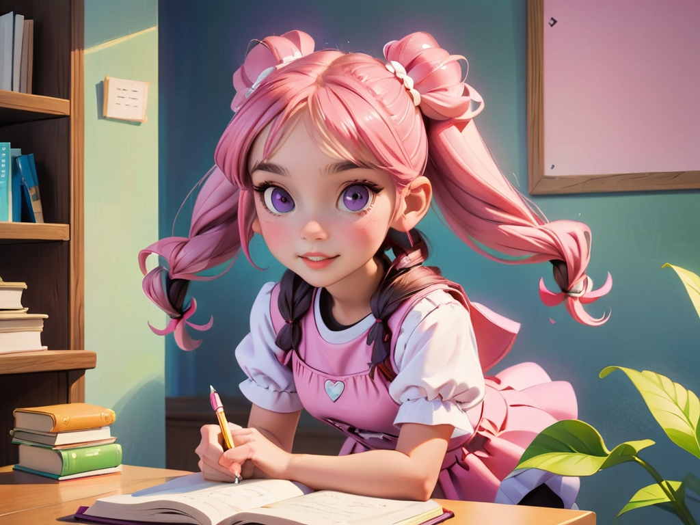
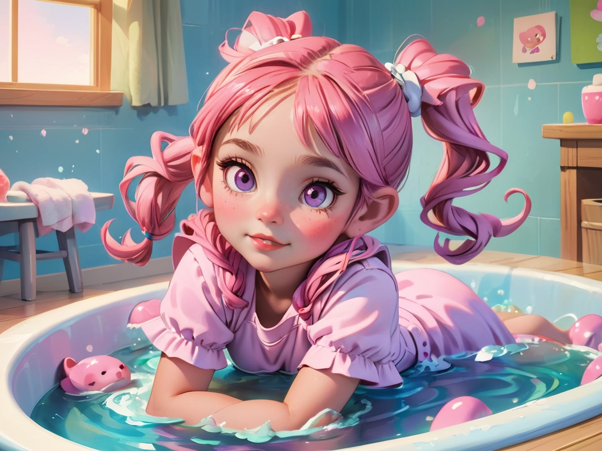
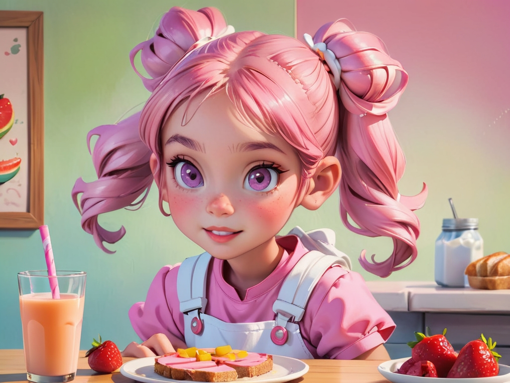
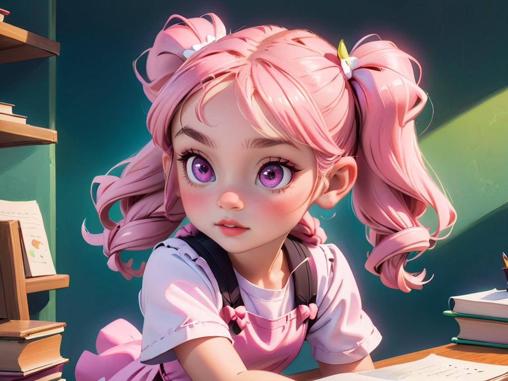

幕 3：Tidying Her Room
Lily 整理房間，把玩具放回箱子，書本放回書架。房間變整齊，她感到開心。

Lily 起床了，伸個大懶腰，開心地說：「新的一天開始了！」她學習自己整理床鋪。
Lily 走進浴室，拿起牙刷，仔細刷牙。「每天刷牙，牙齒才會健康！」她開心地笑了。
Lily 整理房間，把玩具放回箱子，書本放回書架。房間變整齊，她感到開心。
媽媽準備了營養早餐，Lily 吃著水果、牛奶和麵包，知道健康的早餐讓她更有精神。
在學校，Lily 看見朋友掉了鉛筆，立刻幫忙撿起來。朋友笑著說：「謝謝你！」
放學回家，Lily 先寫完功課，再去玩耍。她學會了先完成重要的事情，這樣玩得更安心。
午餐時間，Lily 把餅乾分給朋友們一起吃，大家開心地分享，美味變得更多了！
上課時，Lily 認真聽老師講課，寫字時不馬虎，她發現學習變得更有趣了！

Lily 完成作業後才開始玩耍，學會了責任先行，快樂加倍。
睡覺時間到了，Lily 洗好澡、聽媽媽講故事，然後甜甜地進入夢鄉，準備迎接美好的一天！
